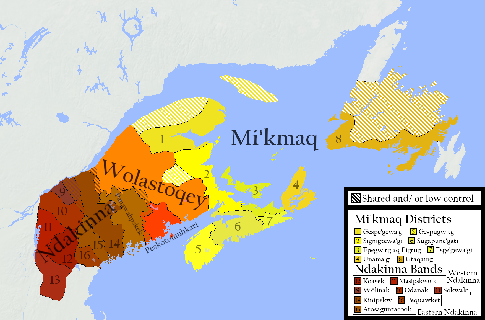
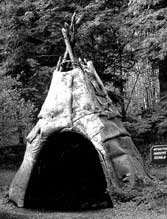

Les Wolastoqiyik — que les Européens ont appelés Malécites ou Maliseet — sont un peuple algonquien dont l'existence entière est rythmée par le Wolastoq (la rivière Saint-Jean). Leur nom signifie « peuple de la belle et généreuse rivière ». Pêcheurs, chasseurs et navigateurs exceptionnels, ils ont forgé une civilisation fluviale unique, profondément liée aux eaux, aux forêts et aux saisons du Wolastokuk. Aujourd'hui, la Première Nation Malécite de Viger perpétue un héritage millénaire de résilience et de solidarité.
Origines et identité
Les Wolastoqiyik font partie de la grande famille des peuples algonquiens et occupent depuis des millénaires le bassin du fleuve Saint-Jean. Leur nom, Wolastoqiyik, vient de Wolastoq — « la belle et généreuse rivière » — et affirme une identité indissociable de cette artère d'eau. Le territoire entier s'appelle Wolastokuk.
Les Européens ont d'abord utilisé le terme Etchemins, puis Malécites — un mot d'origine mi'kmaq signifiant « ceux qui parlent lentement », sans doute en référence aux différences linguistiques entre les deux nations. Aujourd'hui, Wolastoqiyik est le terme privilégié pour désigner le peuple dans son ensemble.
La langue Wolastoqey latuwewakon appartient à la famille des langues algonquiennes orientales et conserve des liens très proches avec le passamaquoddy. Elle est encore vivante au Maine et au Nouveau-Brunswick, et des projets de revitalisation voient le jour au Québec.
🌊 Cosmologie wolastoqiyik — Gluskap et le fleuve créateur
- Gluskap (ou Keluwoskap) est le héros créateur de la tradition wolastoqiyik. Selon la légende, il a créé le Wolastoq en abattant un arbre qui frappa le monstre Aglebe'm, libérant les eaux du fleuve.
- Le Wolastoq n'est pas seulement une rivière : c'est un être vivant, spirituel, qui relie tous les sites de la nation — villages, lieux de pêche, cimetières et lieux de cérémonie.
- Les aînés et aînées sont les gardiens de la tradition orale, de la langue et des enseignements spirituels. Leur parole guide la communauté.
- La solidarité est la valeur fondamentale : le partage du poisson, du gros gibier et des ressources reste aujourd'hui un pilier de la vie communautaire.
Territoire et géographie
Le territoire traditionnel des Wolastoqiyik, appelé Wolastokuk, s'étend sur environ 55 000 km² depuis les sources du fleuve dans les monts Notre-Dame, à la frontière Québec-Maine, jusqu'à la baie de Fundy. Ce bassin versant immense constitue un paysage vivant où chaque cours d'eau, chaque île et chaque rapide porte un nom et une histoire.

Le Wolastokuk — territoire traditionnel des Wolastoqiyik, du Québec à la baie de Fundy
Le Wolastoq (fleuve Saint-Jean) est l'artère centrale de ce territoire. Long de 673 km, il traverse trois provinces et deux pays. En 2011, l'ensemble du bassin versant a été désigné lieu historique national du Canada, reconnaissant l'importance spirituelle, culturelle et historique de cette étendue d'eau pour le peuple wolastoqiyik.
Les villages traditionnels étaient situés stratégiquement au-dessus des plaines inondables — comme à Meductic — tandis que les champs cultivés occupaient les zones basses fertilisées par les crues printanières. Cette organisation intelligente permettait une exploitation durable des ressources.
Organisation sociale et Confédération Wabanaki
La société wolastoqiyik était organisée en bandes autonomes, chacune avec son conseil de bande composé d'un chef de guerre, d'un chef civil et de représentants familiaux. Pour les questions concernant l'ensemble de la nation, un conseil général réunissait les délégués de toutes les bandes.
Les Wolastoqiyik sont l'un des piliers de la Confédération Wabanaki — « peuple de l'aube » —, alliance défensive regroupant les Wolastoqiyik, Abenaki, Passamaquoddy, Penobscot et Mi'kmaq. Cette confédération a permis de résister pendant des siècles à l'expansion de la Haudenosaunee. Les conseils se tenaient dans des lieux de rassemblement comme l'île Kani Uten, près de l'embouchure du fleuve.
🏛️ La Confédération Wabanaki
- Alliance défensive contre l'expansion de la Confédération Haudenosaunee (Iroquoise).
- Les Wolastoqiyik occupaient une position centrale grâce à leur contrôle du fleuve Saint-Jean, principale voie de communication intérieure.
- Le Grand Conseil réunissait les chefs des nations membres pour les décisions de guerre, de paix et d'alliance.
- Cette structure politique complexe a perduré du XVIIe siècle jusqu'à la conquête britannique.
Culture, langue et savoir-faire
La culture wolastoqiyik est marquée par une relation intime avec le fleuve et la forêt. Les canoës d'écorce de bouleau — légers, rapides et résistants — permettaient de parcourir les 700 km du réseau hydrographique. Construits entièrement à partir de matériaux naturels (écorce de bouleau, cèdre, racines de sapin, gomme d'épinette), ils étaient le moyen de transport et de commerce essentiel.
L'habitation traditionnelle était un wigwam couvert d'écorce de bouleau, adapté aux saisons rigoureuses du Wolastokuk. Les Wolastoqiyik maîtrisaient également la fabrication de raquettes, de toboggans et de harpons — technologies raffinées pour survivre dans un environnement exigeant.

Wigwam wolastoqiyik — structure d'écorce de bouleau adaptée aux saisons rigoureuses
Langue : Wolastoqey latuwewakon
Langue algonquienne orientale, très proche du passamaquoddy. Elle est encore parlée au Maine et au Nouveau-Brunswick. Au Québec, des projets d'immersion et de transmission intergénérationnelle se développent.
Canoë d'écorce
Le canot wolastoqiyik était construit entièrement à partir de matériaux naturels. Léger et rapide, il permettait de transporter plusieurs familles et de franchir les portages entre bassins versants.
Le Wolastoq
Le fleuve Saint-Jean est le cœur du territoire. Source de nourriture, de transport et de spiritualité, il relie tous les sites de la nation depuis des millénaires.
Solidarité
La distribution de boîtes de viande et de poisson aux membres dispersés perpétue aujourd'hui le principe fondamental de partage wolastoqiyik.
Forêt boréale
La forêt du Wolastokuk fournissait nourriture, médicaments, matériaux de construction et bois de chauffe. Chaque plante, chaque arbre avait sa place dans le savoir traditionnel.
Saumon et pêche
Le saumon du Wolastoq est un aliment sacré. Les frayères étaient protégées et les techniques de pêche transmises de génération en génération avec un profond respect pour le poisson.
« Le Wolastoq est notre mère. Ses eaux nous nourrissent, ses rives nous abritent, et ses histoires nous instruisent. »
— Sagesse wolastoqiyik traditionnelle
Histoire ancienne et contact européen
Les Wolastoqiyik habitent le Wolastokuk depuis au moins 12 000 ans, selon les données archéologiques et les récits oraux. Ils étaient chasseurs-cueilleurs-pêcheurs semi-nomades, déplaçant leurs villages au rythme des saisons et des migrations du gibier.
Le premier contact documenté avec les Européens remonte à 1604, lorsque Samuel de Champlain explore la région. Les Wolastoqiyik deviennent rapidement des partenaires commerciaux et alliés stratégiques des Français dans la traite des fourrures. Fort La Tour, construit sur le fleuve Saint-Jean au début du 17e siècle, devient un centre d'échange majeur.
Après la conquête britannique de 1763, les Wolastoqiyik doivent composer avec une nouvelle puissance qui ignore leurs droits. Les traités de paix et d'amitié signés avec la Couronne britannique visent à établir une coexistence pacifique, mais sont souvent bafoués. La perte progressive des terres et la politique d'assimilation marquent les siècles suivants.
Premier contact
Champlain explore le fleuve Saint-Jean. Début d'une alliance avec les Français qui durera plus de 150 ans.
Fort La Tour
Construction d'un poste de traite français au confluent du fleuve. Les Wolastoqiyik deviennent partenaires essentiels dans le commerce des fourrures.
Conquête britannique
Après la défaite française, les Wolastoqiyik doivent négocier avec les Britanniques. Les droits ancestraux sont progressivement ignorés.
Premières réserves
Les Britanniques assignent des terres aux Wolastoqiyik, notamment dans la vallée de la rivière Tobique. Le territoire traditionnel est déjà très réduit.
Reconnaissance québécoise
L'Assemblée nationale du Québec reconnaît officiellement la Nation malécite comme la onzième nation autochtone du Québec. Tournant politique majeur.
Wolastoq NHS
Le bassin versant du Wolastoq est désigné lieu historique national du Canada, reconnaissant l'importance spirituelle et culturelle du fleuve pour le peuple wolastoqiyik.
Les Wolastoqiyik aujourd'hui
La Première Nation Malécite de Viger est la seule bande wolastoqiyik reconnue au Québec. Ses membres sont dispersés principalement entre Lévis, Rivière-du-Loup et la région de Cacouna, avec la réserve de Kataskomiq près de Rivière-du-Loup comme territoire officiel.
Cette dispersion géographique rend la transmission culturelle plus difficile, mais la communauté reste mobilisée. Le séminaire Wahsipekuk, un programme d'immersion culturelle à bord d'un navire-école, permet aux jeunes de renouer avec leur patrimoine. La cuisine traditionnelle — basée sur les produits de la chasse, de la pêche et de la forêt — joue également un rôle clé dans cette revitalisation.
Revitalisation linguistique
Des projets d'immersion en wolastoqey voient le jour. Les aînés transmettent la langue aux jeunes, perpétuant une tradition orale millénaire.
Droits ancestraux
La Première Nation Malécite de Viger défend les droits ancestraux sur le Wolastokuk et revendique une reconnaissance territoriale plus forte.
Reprise du canot
La construction de canots d'écorce traditionnels connaît un renouveau. Des lancements de canots wolastoqiyik ont lieu sur le fleuve, reliant le présent à la tradition.
Cuisine et partage
La distribution de boîtes de viande et de poisson perpétue la valeur fondamentale de solidarité. La cuisine traditionnelle est un vecteur de rassemblement et de fierté.
La Première Nation Malécite de Viger continue de défendre les droits ancestraux de son peuple et de promouvoir la reconnaissance du Wolastokuk comme territoire traditionnel. Les défis demeurent, mais la résilience culturelle et l'attachement au Wolastoq assurent la pérennité de la nation wolastoqiyik pour les générations futures.